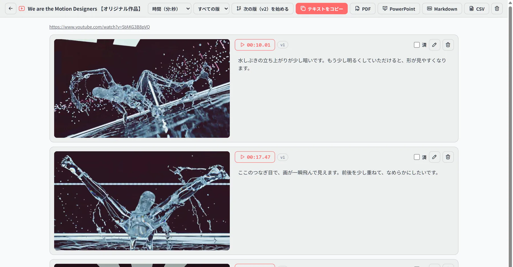

共有リンクは、楽に見えて、あとで重くなる
修正を、チャットや共有のリンクで受け取るのは、楽に見えます。ただ、担当者さまが、そのリンクを社内に配ると、関係者の誰でも見て、書き込める状態になります。
- 意見があちこちに散らばり、矛盾したものも混ざる
- 集約されないまま、こちらに届く
- 修正が膨らみ、終わりが見えなくなる（デスマーチの始まりです）
これは、担当者さまにとっても、制作者にとっても、良くありません。この話は、複数のプロデューサーに聞いても、同じ形で出てきました。
担当者さまに、「この拡張機能で出してください」と頼む
解決は、受け取る側から、お願いすることです。「修正は、この拡張機能で出していただけますか」。担当者さまが、LB TAB Layers で、場面ごとに指示を書き、整理された指示シートにして渡してくだされば、自然と、集約された形で受け取れます。
下の文面を、そのままコピーして、お使いください（〇〇の部分を書き換えてください）。
丁寧な文面
コピーしました短い文面（チャット向け）
コピーしました担当者さま向けの案内は、「修正をお願いする担当者さまへ」にあります。このページのリンクを送れば、使い方も伝わります。
受け取るのは、整理された指示シート

制作者が受け取る書類は、このように見えます。


- 場面ごとに、1つずつ：動画は再生位置（00:12 など）、画像やWebサイトは番号つきで、場所が特定できます
- 渡される形：PDF・PowerPoint・テキスト・Markdown・CSV。アカウントも、専用のツールも要りません
- 版が分かる：1回目はv1、2回目はv2のように、どれが最新かが分かります
- 動画・画像・Webサイト：動画のほか、デザインやホームページの修正にも使えます
制作者ご自身の見直しにも
LB TAB Layers は、見ている動画を止めて、その場で、再生位置つきの文を書けます。手元の動画にも使えます。書き出す前の、ご自身の見直しにも、使えます。撮る・止める・書く、という操作が流れるので、頭は、直し方を考えることに使えます。

画面は、当社が制作した動画で撮影したものです。
安心して使っていただくために
- アカウント登録は不要です
- 撮った画像と指示は、お使いのパソコンの中だけに残ります。当社には送りません（プライバシーポリシー）
- 修正指示は PRO の機能ですが、お試し期間中は、すべて使えます
くわしい使い方は「【機能ガイド】修正指示」にあります。